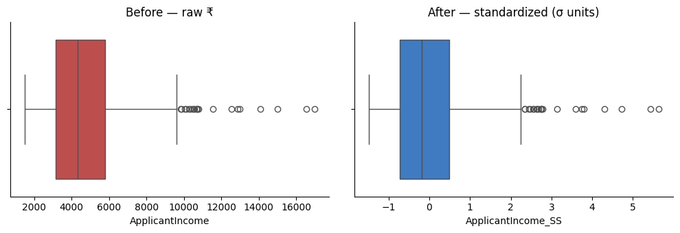

Neha built a model on two columns: age (18–70) and salary (₹200,000–₹2,000,000).
The model ignored age completely. Not because age was unimportant — because one year of age is a difference of 1, while a salary gap is 50,000. Measured as distance, salary drowned everything else.
The units decided the outcome, not the meaning. Had she recorded salary in lakhs instead of rupees, identical data would have given a different model.
Scaling removes the units. StandardScaler centres a column and divides by its spread; MinMaxScaler squeezes it to 0–1. Distance-based models need it; trees do not care.
🔑 The one idea
Scaling puts every column on the same footing, so distance means the same in every direction.
02_ML_Roadmap.MD item 5: "Normalizing & Standardization — put features
on the same scale (Min-Max vs Z-score) so no single feature dominates just
because its numbers are bigger." This is different from outlier
removal (12_Outlier.ipynb → 14_Outlier_Removal_Z_Score.ipynb, which
drop rows) — scaling touches every row, drops none, and only
changes the units a column is measured in.
Two techniques, same goal:
Formula
Result
Standardization (Z-score)
X_new = (Xi − X_mean) / std
centered at 0, spread ≈ 1 std
Normalization (Min-Max)
X_new = (Xi − X_min) / (X_max − X_min)
squeezed into [0, 1]
Section 1 runs Standardization on ApplicantIncome (the column
12_Outlier.ipynb used); Section 5 runs Normalization on
CoapplicantIncome (the column 14_Outlier_Removal_Z_Score.ipynb used) —
reusing familiar columns so only the technique changes, not the data.
The three questions this notebook answers along the way: does scaling
remove outliers, what does describe() mean afterward, and does scaling
change the data's shape?
codecell 1
import pandas as pd
import numpy as np
import seaborn as sns
import matplotlib.pyplot as plt
from sklearn.preprocessing import StandardScaler, MinMaxScaler
ApplicantIncome has 2 missing values, same gap 12_Outlier.ipynb worked
around. Filling it the obvious way first, on purpose, to show why it
silently doesn't work:
/var/folders/07/ymtnct793nj_13sf3p9t0lqh0000gn/T/ipykernel_45413/1792826338.py:1: ChainedAssignmentError: A value is being set on a copy of a DataFrame or Series through chained assignment using an inplace method.
Such inplace method never works to update the original DataFrame or Series, because the intermediate object on which we are setting values always behaves as a copy (due to Copy-on-Write).
For example, when doing 'df[col].method(value, inplace=True)', try using 'df.method({col: value}, inplace=True)' instead, to perform the operation inplace on the original object, or try to avoid an inplace operation using 'df[col] = df[col].method(value)'.
See the documentation for a more detailed explanation: https://pandas.pydata.org/pandas-docs/stable/user_guide/copy_on_write.html
dataset["ApplicantIncome"].fillna(dataset["ApplicantIncome"].mean(), inplace=True)
np.int64(2)
Still 2 — and the ChainedAssignmentError warning above explains
why: dataset["ApplicantIncome"].fillna(..., inplace=True) is chained
indexing. Under pandas' Copy-on-Write, dataset["ApplicantIncome"] hands
back a copy, so inplace=True patches that throwaway copy — dataset
itself never changes. Pandas' own suggested fix: call .fillna on
dataset directly with a {column: value} dict.
0 — fixed. All 618 rows now carry a real ApplicantIncome
value, so every count in this notebook reads 618, not 616. (Worth
remembering when reading describe() further down — a count that's
lower than the row total is usually this exact bug, not a real data gap.)
codecell 9
dataset["ApplicantIncome"].describe()
Output
count 618.000000
mean 4730.256494
std 2177.405150
min 1500.000000
25% 3162.000000
50% 4334.500000
75% 5807.000000
max 16981.000000
Name: ApplicantIncome, dtype: float64
Raw shape: mean (4730.26) sits above the median/50% (4334.5) —
the same right-skew 12_Outlier.ipynb found, now with a clean 618-row
count behind it.
Same string of outlier dots past the right whisker as
12_Outlier.ipynb. Exactly 21 points, by the standard
Q3 + 1.5×IQR rule — confirmed with numbers in Section 3, kept in mind for
comparison after scaling.
1. Standardization — StandardScaler
ss.fit(...) learns two numbers from the column — mean_ and scale_
(population std, i.e. divided by N, not N-1) — and ss.transform(...)
applies (x − mean_) / scale_ to every value.
codecell 14
ss = StandardScaler()
ss.fit(dataset[["ApplicantIncome"]])
dataset["ApplicantIncome_SS"] = ss.transform(dataset[["ApplicantIncome"]])
dataset[["ApplicantIncome", "ApplicantIncome_SS"]].head(3)
Check row 0 by hand: (1686 − 4730.26) / 2175.64 ≈ -1.399 — matches
ApplicantIncome_SS above exactly. Note ss.scale_ (2175.64) is
not the same number describe() reports as std (2177.41) — that
gap is the subject of Section 2's first surprise.
2. Reading describe() on ApplicantIncome_SS, Value by Value
codecell 17
dataset["ApplicantIncome_SS"].describe()
Output
count 6.180000e+02
mean -1.422810e-16
std 1.000810e+00
min -1.484737e+00
25% -7.208244e-01
50% -1.819033e-01
75% 4.949082e-01
max 5.630862e+00
Name: ApplicantIncome_SS, dtype: float64
Row by row, against the raw describe() above:
count = 618 — not 616. Confirms Section 0's fix actually worked;
the old bug would have leaked 2 NaNs straight through
(NaN − mean) / std = NaN into this column too.
mean = -1.42e-16 — as good as exactly 0. Standardization is
defined to center the mean at 0; this isn't rounding error in the
concept, it's rounding error in 64-bit floats representing an exact 0.
std = 1.000810 — close to 1, but not exactly. This is not a bug:
StandardScaler divides by the population std (÷N), but pandas'
.std() inside describe() uses the sample std (÷(N-1),
Bessel's correction) by default. The ratio between them is exactly
sqrt(N/(N-1)) = sqrt(618/617) = 1.000810 — matches to 6 decimal
places. Two different, both-correct definitions of "standard deviation,"
disagreeing by a predictable amount.
min = -1.484737 ↔ raw min1500 — the least-poor applicant is
(1500 − 4730.26) / 2175.64 ≈ -1.48 std devs below the mean.
25% = -0.720824 ↔ raw 3162 — a quarter of applicants earn
under 0.72 std devs below average.
50% = -0.181903 ↔ raw 4334.5, the median — slightly negative,
confirming the mean (pulled up by the right tail) sits above the
typical applicant, i.e. the skew already visible in Section 0.
75% = 0.494908 ↔ raw 5807.
max = 5.630862 ↔ raw 16981 — the single richest applicant is
5.6 standard deviations above the mean. That's the same top outlier
the boxplot flagged; scaling didn't hide it, it just re-labeled it in σ
units instead of ₹.
3. Does Scaling Remove Outliers?
codecell 20
fig, axes = plt.subplots(1, 2, figsize=(10, 3.5))
sns.boxplot(x=dataset["ApplicantIncome"], color="#d03b3b", ax=axes[0])
axes[0].set_title("Before — raw ₹")
sns.boxplot(x=dataset["ApplicantIncome_SS"], color="#2a78d6", ax=axes[1])
axes[1].set_title("After — standardized (σ units)")
for ax in axes:
ax.spines[["top", "right"]].set_visible(False)
plt.tight_layout()
plt.show()

Output from this notebook.
Same number of dots past the whiskers in both plots — just relabeled
on the x-axis. Confirmed with the actual IQR rule, not just eyeballing:
21 and 21 — identical. Answer to "does scaling remove outliers":
no. Standardization is a strictly increasing linear transform
(multiply by a positive 1/scale_, then shift by -mean_/scale_) applied
to every point, including Q1 and Q3 themselves. So "further than
Q3 + 1.5×IQR" before scaling is exactly equivalent to "further than
Q3' + 1.5×IQR'" after — the same points end up flagged, just measured in
different units. Removing outliers is the deliberate, separate job of
12_Outlier.ipynb–14_Outlier_Removal_Z_Score.ipynb; scaling moves
everyone together and leaves who's-extreme completely untouched.
(This is the corrected version of the original draft's before/after
plot — that one had the titles swapped, labeling the scaled column
"Before" and the raw column "After.") Side by side, the two curves are
the same shape — same right-skew, same bump position relative to the rest
of the curve — just stretched onto a different x-axis. Proof, numerically,
not just by eye:
Skew matches to 13+ decimal places; kurtosis differs only at the
13th decimal (float noise, not a real difference). Both are exactly
equal because skewness and kurtosis are scale-and-location invariant —
they're built from (x − mean) divided by std, raised to a power, which
is the same ratio standardization itself computes. A transform that only
shifts and rescales an axis mathematically cannot move these numbers.
That's the rigorous version of "the data's nature is not changed":
standardization changes where the ruler's 0 and 1 are, never the shape
of what's being measured.
The same fact, in two dimensions. Standardizing ApplicantIncomeandCoapplicantIncome together and plotting one against the other —
this is the whiteboard sketch (scatter cloud, off in a corner → same cloud,
re-centered on the axes) made real with actual data:
The cloud slides so its center sits on (0, 0) and stretches to a
new scale — but the cloud's shape (which points are bunched together,
which sit apart, the skew toward the top-right) is identical in both
panels. Nothing about the data moved relative to itself; only where the
axes' origin and unit-length are drawn moved.
count 618.000000
mean 0.134630
std 0.156664
min 0.000000
25% 0.000000
50% 0.105851
75% 0.215567
max 1.000000
Name: CoapplicantIncome_MM, dtype: float64
Against the raw CoapplicantIncome stats (min 0, max 10288):
min = 0.0, max = 1.0, exactly — by construction, (X_min − X_min)/(range) = 0
and (X_max − X_min)/(range) = 1. Min-Max guarantees the endpoints;
Standardization never guaranteed any specific min/max at all.
mean = 0.1346, std = 0.1567 — nowhere near (0, 1). Min-Max only
fixes the endpoints; the mean/std land wherever the raw distribution's
own mean/spread happen to fall inside that [0, 1] window. A mean this
low (0.13, not 0.5) is a symptom of the same right-skew as ApplicantIncome:
most coapplicants cluster near the low end, one huge value stretches the
range up to 1.
25% = 0.0 — literally a quarter of coapplicants report 0 raw
income, so their scaled value is exactly the floor too.
50% = 0.1059, 75% = 0.2157 — most of the data lives in the
bottom fifth of the [0, 1] range; the last 79% of that range belongs to
a small number of high earners.
15 and 15, skew matching to 13+ decimals — the same two
conclusions from Sections 3–4 hold for Normalization too: outliers aren't
removed, shape isn't changed. Min-Max is just a different formula for the
same kind of transform (linear, applied uniformly to every point).
6. Standardization vs. Normalization — Which One, When
Both are linear, both preserve shape, neither removes outliers — so the
real difference is sensitivity to outliers while fitting:
Standardization uses mean/std. A single extreme value pulls both,
but a std is a squared-then-rooted average across all points, so one
outlier's influence is diluted by the other 617.
Min-Max uses X_min/X_max directly — the literal most extreme
point defines an endpoint of the output range. One outlier doesn't just
influence the scale, it is the scale.
Concretely, on this exact column:
codecell 39
below_tenth = (dataset["CoapplicantIncome_MM"] < 0.1).sum()
print(f"{below_tenth} of 618 coapplicants ({below_tenth/618:.1%}) land below 0.1 on a 0–1 scale")
print("because a single value —", dataset['CoapplicantIncome'].max(), "— alone stretches the range up to 1.0")
Output
297 of 618 coapplicants (48.1%) land below 0.1 on a 0–1 scale
because a single value — 10288 — alone stretches the range up to 1.0
297 of 618 (48%) get crushed into the bottom tenth of the [0, 1]
range, purely because the max (10288) is so far from the typical value.
This is exactly why running outlier detection (12–14) before Min-Max
matters more than it does before Standardization: Min-Max hands the
top-of-range slot to whatever the largest value is, outlier or not. As a
default: Standardization is the safer everyday choice (most models — KNN,
K-Means, PCA, anything gradient-descent-based — assume roughly this);
reach for Min-Max specifically when an algorithm needs a bounded [0, 1]
input (e.g. some neural-net input layers), and consider handling outliers
first if you do.
7. Why This Actually Matters — a Distance Example
02_ML_Roadmap.MD's own justification for item 5: "a distance-based
algorithm would treat a ₹1,000 income difference as 'bigger' than a
50-point credit-score difference, purely because of units." Same idea,
concretely, with two real applicants who differ in bothApplicantIncome and Credit_History:
codecell 42
dataset.fillna({"Credit_History": dataset["Credit_History"].mode()[0]}, inplace=True)
a, b = dataset.iloc[1], dataset.iloc[4]
print("applicant 1:", a["ApplicantIncome"], a["Credit_History"])
print("applicant 4:", b["ApplicantIncome"], b["Credit_History"])
income_gap2 = (a["ApplicantIncome"] - b["ApplicantIncome"]) ** 2
credit_gap2 = (a["Credit_History"] - b["Credit_History"]) ** 2
raw_dist = np.sqrt(income_gap2 + credit_gap2)
print(f"\nraw euclidean distance: {raw_dist:.2f}")
print(f" ApplicantIncome's share of that distance: {income_gap2/(income_gap2+credit_gap2):.4%}")
print(f" Credit_History's share of that distance: {credit_gap2/(income_gap2+credit_gap2):.4%}")
Output
applicant 1: 2437.0 1.0
applicant 4: 3002.0 0.0
raw euclidean distance: 565.00
ApplicantIncome's share of that distance: 99.9997%
Credit_History's share of that distance: 0.0003%
Applicant 1 earns ₹2437, applicant 4 earns ₹3002 — a modest ₹565
gap. But their Credit_History (a strong real signal for loan approval)
differs too: 1.0 vs 0.0. In raw units, income's much bigger numbers
completely swamp the distance — Credit_History contributes 0.003%,
essentially invisible to any distance-based algorithm. Now the same pair,
standardized first:
codecell 44
scaled_pair = StandardScaler().fit_transform(dataset[["ApplicantIncome", "Credit_History"]])
sa, sb = scaled_pair[1], scaled_pair[4]
s_income_gap2 = (sa[0] - sb[0]) ** 2
s_credit_gap2 = (sa[1] - sb[1]) ** 2
scaled_dist = np.sqrt(s_income_gap2 + s_credit_gap2)
print(f"scaled euclidean distance: {scaled_dist:.2f}")
print(f" ApplicantIncome's share of that distance: {s_income_gap2/(s_income_gap2+s_credit_gap2):.4%}")
print(f" Credit_History's share of that distance: {s_credit_gap2/(s_income_gap2+s_credit_gap2):.4%}")
Output
scaled euclidean distance: 2.81
ApplicantIncome's share of that distance: 0.8548%
Credit_History's share of that distance: 99.1452%
The shares flip: Credit_History now drives 99.15% of the
distance, income only 0.85%. Nothing about which applicants are "similar"
changed in reality — only the ruler did. A ₹565 gap is tiny relative to
income's own spread (std ≈ ₹2176 → 0.26σ), while a full 0-vs-1 swing in a
binary column is essentially its entire spread (std ≈ 0.37 → ~2.7σ).
Pre-scaling, Credit_History — despite mattering enormously for whether a
loan gets repaid — would be almost completely ignored by any Euclidean
distance calculation (KNN, K-Means, ...) simply because it happens to be
measured in units of 1s instead of thousands.
Summary
Standardization (X_new = (Xi − mean)/std): centers at 0, spreads
to ≈1 std, unbounded range.
Normalization (X_new = (Xi − min)/(max − min)): bounded to
[0, 1] exactly, more sensitive to outliers since a single extreme
value defines an endpoint.
Neither removes outliers — proven with matching IQR counts before
and after, for both techniques (Sections 3, 5). Outlier removal
(12–14) is a separate, earlier decision.
Neither changes the data's shape/nature — proven with matching
skew/kurtosis to 13+ decimal places, for both techniques (Sections 4, 5).
Both are purely linear (shift + rescale) transforms, and shape statistics
are invariant to exactly that kind of transform.
What scaling does do: put differently-united columns on a comparable
footing, so distance-based algorithms and gradient descent don't
accidentally let one feature dominate just because its raw numbers are
bigger (Section 7).
Companion to 15_Feature_Scaling.ipynb (Standardization) — same
questions, same rigor, this time for the other half of
02_ML_Roadmap.MD item 5: Min-Max scaling.
X_new = (Xi − min(X)) / (max(X) − min(X))
Unlike Standardization ((Xi − mean)/std — unbounded, centered at 0),
Min-Max is defined entirely by the two most extreme points in the column:
min(X) always maps to exactly 0, max(X) always maps to exactly 1,
everything else lands somewhere in between. CoapplicantIncome again — 0
missing values, no fillna detour needed (unlike ApplicantIncome, whose
chained-assignment fillna bug 15 found and fixed).
codecell 1
import pandas as pd
import numpy as np
import seaborn as sns
import matplotlib.pyplot as plt
from sklearn.preprocessing import MinMaxScaler, StandardScaler
Right-skewed with a string of outlier dots past the right whisker —
same starting point 14_Outlier_Removal_Z_Score.ipynb used on this exact
column. min is already 0 (a coapplicant with no income), which will
matter in Section 2.
1. Min-Max Scaling — MinMaxScaler
mm.fit(...) learns two numbers from the column — data_min_ and
data_max_ — and mm.transform(...) applies
(x − data_min_) / (data_max_ − data_min_) to every value.
codecell 9
mm = MinMaxScaler()
mm.fit(dataset[["CoapplicantIncome"]])
dataset["CoapplicantIncome_MM"] = mm.transform(dataset[["CoapplicantIncome"]])
dataset[["CoapplicantIncome", "CoapplicantIncome_MM"]].head(3)
Check row 0 by hand: (1020 − 0) / (10288 − 0) ≈ 0.0991 — matches
CoapplicantIncome_MM above exactly. mm.data_min_ = 0, mm.data_max_
= 10288 — literally the raw column's own min and max, nothing
estimated or averaged.
2. Reading describe() on CoapplicantIncome_MM, Value by Value
codecell 12
dataset["CoapplicantIncome_MM"].describe()
Output
count 618.000000
mean 0.134630
std 0.156664
min 0.000000
25% 0.000000
50% 0.105851
75% 0.215567
max 1.000000
Name: CoapplicantIncome_MM, dtype: float64
Row by row, against the raw describe() above (min 0, max
10288):
min = 0.0, max = 1.0, exactly — by construction:
(data_min_ − data_min_)/range = 0 and (data_max_ − data_min_)/range = 1.
Min-Max guarantees these two endpoints; Standardization in 15 never
guaranteed any specific min/max at all.
mean = 0.1346, std = 0.1567 — nowhere near (0, 1). Min-Max only
fixes the endpoints; mean/std land wherever the raw distribution's own
center/spread happen to fall inside that [0, 1] window. A mean this low
(0.13, not 0.5) is the same right-skew as the raw column: most
coapplicants cluster near the low end, one large value stretches the
range up to 1.
25% = 0.0 — literally a quarter of coapplicants report 0 raw
income, so their scaled value is exactly the floor too.
50% = 0.1059, 75% = 0.2157 — most of the data lives in the bottom
fifth of the [0, 1] range; the remaining 79% of that range is claimed
by a small number of high earners.
3. Does Min-Max Remove Outliers?
codecell 15
fig, axes = plt.subplots(1, 2, figsize=(10, 3.5))
sns.boxplot(x=dataset["CoapplicantIncome"], color="#d03b3b", ax=axes[0])
axes[0].set_title("Before — raw ₹")
sns.boxplot(x=dataset["CoapplicantIncome_MM"], color="#2a78d6", ax=axes[1])
axes[1].set_title("After — Min-Max (0–1 range)")
for ax in axes:
ax.spines[["top", "right"]].set_visible(False)
plt.tight_layout()
plt.show()
15 and 15 — identical, same conclusion 15 reached for
Standardization: no. Min-Max is also a strictly increasing linear
transform (multiply by a positive 1/(data_max_ - data_min_), then shift)
applied to every point, Q1/Q3 included — so "further than
Q3 + 1.5×IQR" survives the transform unchanged, just measured on a
different scale. Removing outliers is still the separate, deliberate job
of 12_Outlier.ipynb–14_Outlier_Removal_Z_Score.ipynb.
Same shape, matching to 13+ decimal places, same reason 15 proved
for Standardization: skew/kurtosis are scale-and-location invariant, and
Min-Max is exactly a scale-and-location transform. Different formula,
same guarantee — shape can't move.
The same fact, in two dimensions — the visualization you asked
for, this time for Min-Max:
Compare this to 15's version of the same picture. There,
Standardization pulled the cloud so it straddled the origin symmetrically
(negative values allowed on both axes, since (x-mean)/std can go either
way). Here, Min-Max pulls the same cloud into the unit square — the
dashed lines mark the 1.0 boundary on each axis, and the solid lines mark
0. Every point has non-negative coordinates, because a raw value at the
column's minimum maps to exactly 0, never below. The cloud's shape —
same skew, same clustering, same points sitting apart from the rest — is
still identical to the "before" panel; only the box it's confined to
changed.
5. Why the Bounded Range Matters — Outlier Sensitivity
codecell 26
below_tenth = (dataset["CoapplicantIncome_MM"] < 0.1).sum()
print(f"{below_tenth} of 618 ({below_tenth/618:.1%}) land below 0.1 on the 0-1 scale")
print("driven by a single value —", dataset["CoapplicantIncome"].max(), "— which alone defines the top of the range")
Output
297 of 618 (48.1%) land below 0.1 on the 0-1 scale
driven by a single value — 10288 — which alone defines the top of the range
297 of 618 (48%) get crushed into the bottom tenth of [0, 1],
purely because the max is so far from the typical value. This is the
practical cost of Min-Max's guarantee: fixing the endpoints to exactly
0/1 means one point — whichever is most extreme — single-handedly
defines the whole scale. Standardization's mean/std dilute one
outlier's pull across all 618 points instead; Min-Max hands it the entire
top of the range. Worth running outlier detection (12–14) first if
Min-Max is the plan.
Summary
Min-Max: (Xi − min)/(max − min), bounded to [0, 1] exactly —
guarantees the endpoints, not the mean/std.
Doesn't remove outliers — IQR count identical before and after
(15 and 15, Section 3). It's still a linear transform; relative
extremity is preserved.
Doesn't change the data's shape — skew/kurtosis identical to 13+
decimals (Section 4), and the 2D scatter shows the same cloud shape,
just confined to the unit square instead of centered at a point.
More outlier-sensitive than Standardization — the endpoints are
defined by the single min/max value, not an average across all points
(Section 5). Cross-reference: 15_Feature_Scaling.ipynb for the
Standardization side of this same comparison.
✍️ Handwritten notes
The pages written by hand while working through this topic — the version that came before the tidy write-up. Click any page to enlarge.